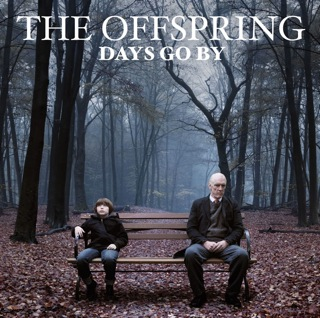

Days go By
Publicado por Arthur Baldner em

Days Go By foi lançado em 25 de junho de 2012 pela gravadora Columbia Records, com o processo de composição e de gravação levando três anos para ser terminado.
Lista de músicas:
- The Future is Now -
Letras
- Secrets from the Underground -
Letras
- Days Go By -
Letras
- Turning Into You -
Letras
- Hurting as One -
Letras
- Cruising California (Bumpin' in My Trunk) -
Letras
- All I Have Left Is You -
Letras
- OC Guns -
Letras
- Dirty Magic -
Letras
- I Wanna Secret Family (With You) -
Letras
- Dividing By Zero -
Letras
- Slim Pickens Does the Right Thing And Rides The Bomb To Hell -
Letras